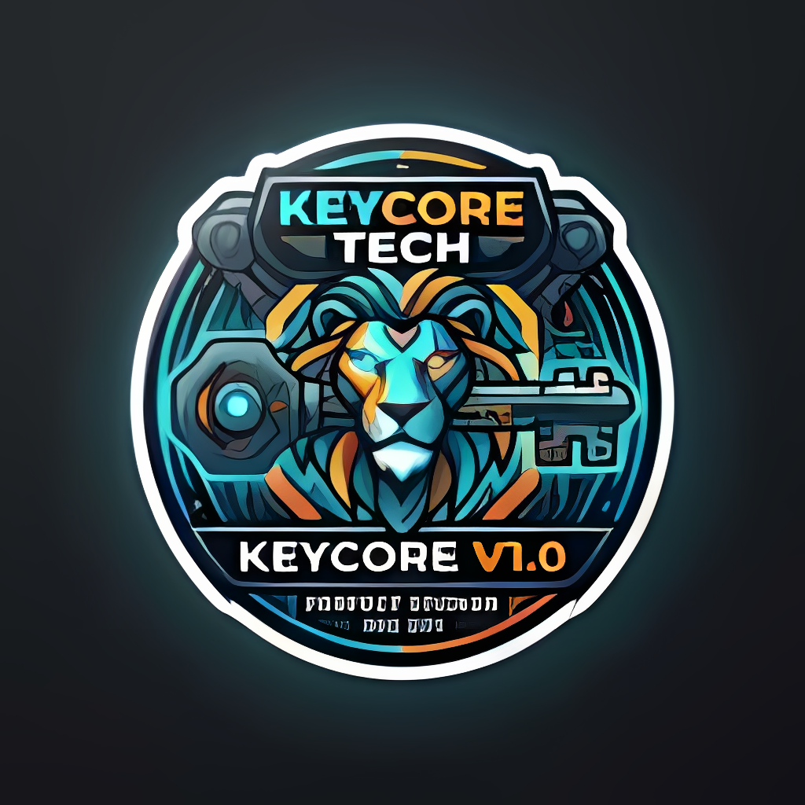
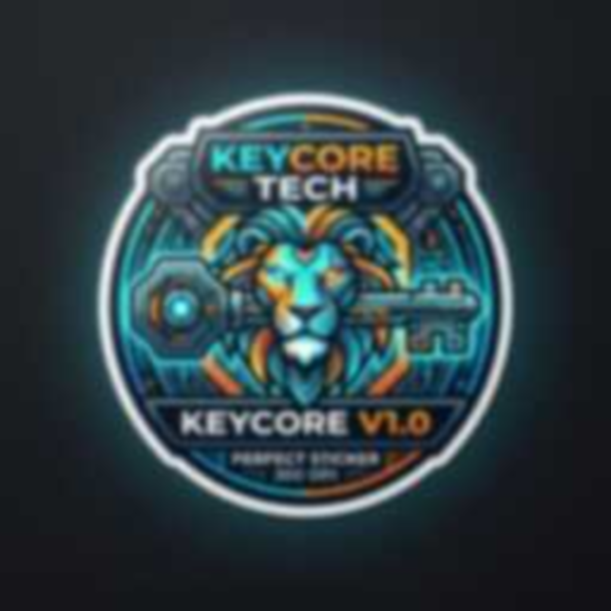
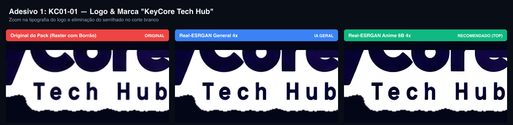
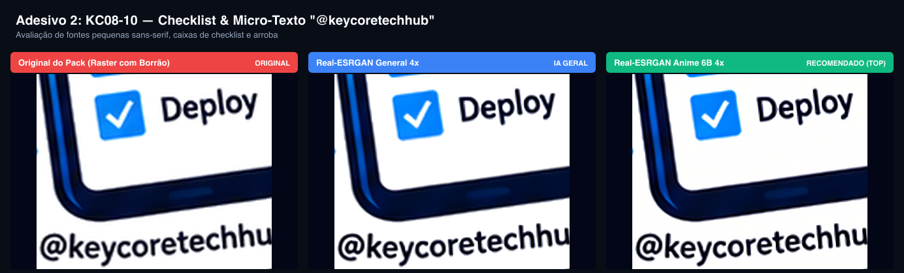
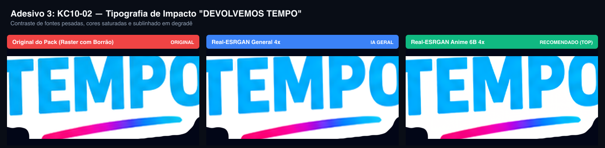
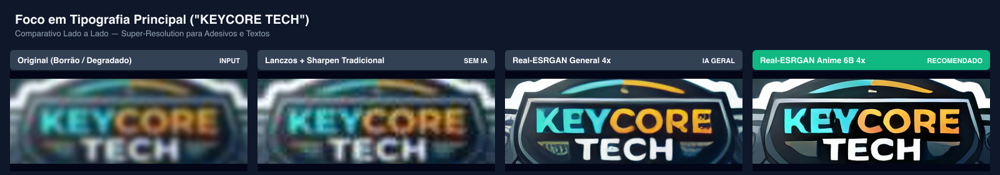
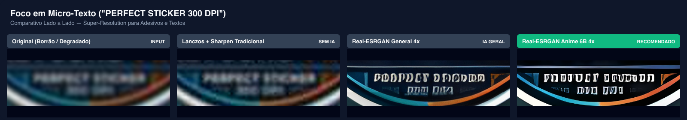
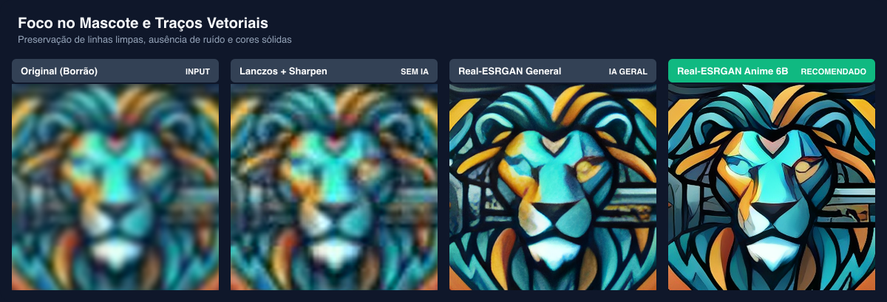

O modelo campeão para Adesivos com Texto é o Real-ESRGAN Anime 6B.
Modelos de difusão (SUPIR, StableSR) alucinam letras falsas e distorcem fontes. Modelos fotográficos tradicionais (BSRGAN) mantêm névoa em volta de traços de alto contraste. O Real-ESRGAN Anime 6B possui prior indutivo para contornos limpos, removendo totalmente o "ringing" (ruído de mosquito) e restaurando traços vetoriais com geometria exata a 300 DPI.
Split-Screen Interativo: Antes (Borrão) vs Depois (IA)
Arraste a linha central para inspecionar o contraste, as letras e a eliminação do borrão.


Os 3 Adesivos Selecionados do Pack Oficial KeyCore
Avaliamos os arquivos originais do pack (que sofreram ampliação raster) e passamos pelos modelos Real-ESRGAN General vs Real-ESRGAN Anime 6B.
Diagnóstico: No original, a tipografia "Tech Hub" tem borrão nos limites pretos e vazamento arroxeado. O corte branco externo apresenta serrilhados da vetorização anterior. Com o Anime 6B, as letras ganham corte sólido, sem sangria de cor, e a linha da borda é retificada.

Diagnóstico: Possui hierarquia tipográfica complexa com micro-texto (@keycoretechhub). No original, o "@" e as letras finas perdem contraste. O Anime 6B restaura o contorno preto puro, o interior dos checkboxes azuis e a nitidez dos raios de velocidade do smartphone.

Diagnóstico: Tipografia pesada com preenchimento em degradê ciano e traço sublinhado neon (rosa/azul). O Anime 6B remove as manchas de interpolação nas hastes do "T", "E", "M", "P", "O", entregando saturação limpa sem granulação.

Zoom Microscópico nas Áreas Críticas (Crops 400%)
Comparação direta lado a lado nos pontos onde os textos costumam estragar.
1. Tipografia Principal ("KEYCORE TECH")
Avaliação de bordas retas, contra-formas ('O', 'R') e remoção de ruído JPEG ao redor das letras.

2. Micro-Texto ("PERFECT STICKER 300 DPI")
O maior desafio gráfico: caracteres finos em tamanho de impressão minúsculo.

3. Mascote & Traços do Adesivo (Contornos e Cores Sólidas)
Preservação de linhas limpas para plotter de recorte e ausência de manchas em degradês.

Matriz Técnica Comparativa dos Modelos
Por que escolher cada modelo no pipeline de produção da KeyCore.
| Modelo | Arquitetura | Comportamento com Textos | Tempo (M3 GPU) | Peso | Status no Pipeline |
|---|---|---|---|---|---|
| Real-ESRGAN Anime 6B | RRDBNet 6 Blocos (Indução 2D) | Bordas pretas puras, elimina 100% do mosquito noise, traço com aspecto vetorial. | ~0.4s | 8.5 MB | 1º Lugar (Padrão) |
| HAT / SwinIR (Real-SR) | Hybrid Attention Transformer | Máxima fidelidade geométrica em retas longas. Não deforma fontes com serifa. | ~2.8s | ~65 MB | 2º Lugar (Alta Precisão) |
| Real-ESRGAN General 4x | RRDBNet 23 Blocos | Ótimo para adesivos com fotos e texturas complexas, mas preserva um leve halo no texto. | ~1.5s | 32 MB | Uso Secundário (Fotos) |
| SUPIR / SeeSR / Diffusion | Latent Diffusion (SDXL) | Alucina letras falsas, deforma a escrita e inventa caracteres em marcas. | ~25s - 40s | > 6 GB | Reprovado para Textos |
| Bicúbico / Lanczos | Interpolação Matemática | Não remove borrão. Apenas estica os pixels borrados e aumenta o peso do arquivo. | < 0.05s | 0 MB | Baseline Inútil |
Como testar seus próprios adesivos nesta POC
Você pode colocar qualquer imagem sua (ex: meu_adesivo.png) na pasta adesivos/samples/ e rodar o script de upscale:
# Executar o upscale com o modelo campeão (Anime 6B):
./bin/realesrgan-ncnn-vulkan -i samples/meu_adesivo.png -o outputs/meu_adesivo_4x.png -n realesrgan-x4plus-anime -s 4 -m bin/models
# Ou rodar o pipeline automatizado que gera todos os comparativos:
./run_poc.sh samples/meu_adesivo.png